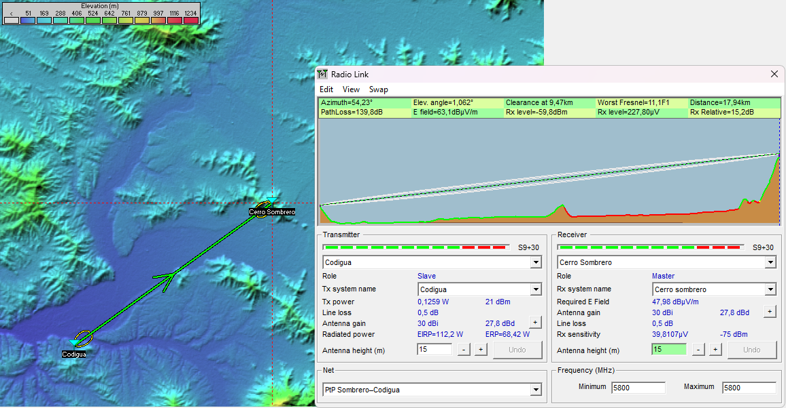
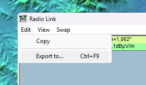
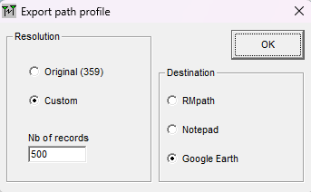
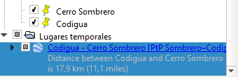
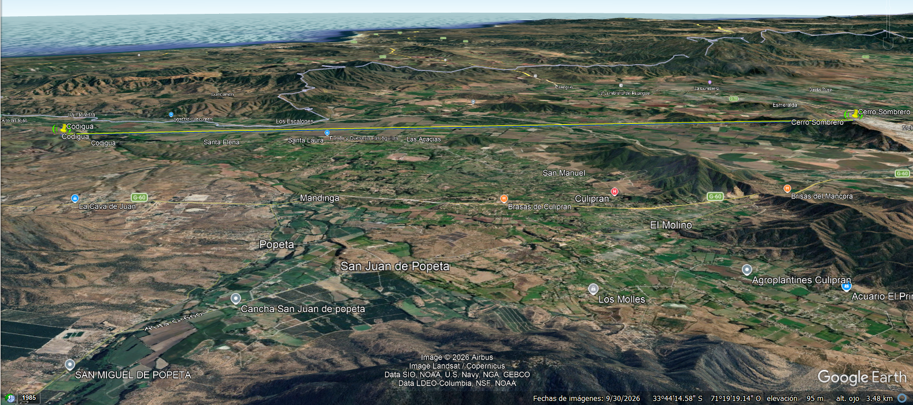

Capítulo 02 · Módulo 01
Radio Link y exportación a Google Earth.
Comprobar el enlace, guardarlo en Descargas y verlo completo sobre el terreno.
1. Revisar el Radio Link listo
Después de configurar Systems y Membership, revisa el enlace en Radio Link. Los sitios, los sistemas asignados, las alturas y la frecuencia deben corresponder al escenario final.
La captura muestra Codigua → Cerro Sombrero: Codigua transmite como Slave y Cerro Sombrero recibe como Master. Con Swap podemos revisar el sentido contrario. Ambos extremos transmiten y reciben; el rol no obliga a mantener siempre el mismo sentido de visualización.

| Dato de comprobación | Resultado del escenario |
|---|---|
| Distancia | 17,94 km |
| PathLoss | 139,8 dB de pérdidas de trayecto |
| Rx level | −59,8 dBm |
| Rx sensitivity | −75 dBm · referencia de 20 MHz y 64QAM (6x) |
| Rx Relative | 15,2 dB de margen sobre la sensibilidad |
La comprobación con Swap dio el mismo nivel recibido y margen en ambos sentidos. El margen es una diferencia en dB; no es SNR ni un porcentaje de disponibilidad.
2. Abrir la opción de exportación
En la ventana Radio Link, abre Edit → Export to…. La captura también muestra el atajo Ctrl + F9.

3. Elegir resolución y destino
En Export path profile, marca Custom, escribe 500 en Nb of records y selecciona Google Earth como destino. Después pulsa OK.

Los 500 registros corresponden al muestreo del perfil exportado. No cambian la resolución del modelo de elevación original ni añaden precisión al terreno de origen.
4. Guardar en Descargas de Windows 11
Cuando aparezca la ventana para guardar, selecciona Descargas y guarda el archivo generado. En este caso el archivo es profile4.kml; puedes usar un nombre reconocible para tu propio caso, conservando la extensión .kml.
Descargas es la carpeta elegida para organizar esta práctica; no es un requisito del cálculo. Conserva además el proyecto de Radio Mobile para poder modificar y volver a analizar el escenario.
5. Apertura automática en Google Earth Pro
En la instalación de Windows 11 utilizada para el taller, al guardar la exportación se abre Google Earth Pro y se carga el enlace automáticamente. La cámara realiza su movimiento de aproximación y termina encuadrando el tramo completo. Espera a que termine la animación antes de ajustar la vista o tomar la captura.

Si otra instalación no abre el archivo automáticamente, utiliza Archivo → Abrir en Google Earth Pro y selecciona el KML guardado en Descargas.
6. Ver el punto a punto sobre la geografía

Comprueba que se vean Codigua y Cerro Sombrero y el enlace completo entre ellos. Puedes ajustar la inclinación o el zoom de la cámara para leer el relieve sin desplazar los sitios.
La vista geográfica ayuda a presentar el trayecto. Los resultados de señal y margen siguen siendo los calculados en Radio Mobile para el escenario de 5800 MHz, 20 MHz, 64QAM, 21 dBm, 30 dBi y 15 m por extremo.
Continuar con el guardado del proyecto
La exportación ya permite presentar el enlace sobre el terreno. En el siguiente módulo guardaremos los marcadores y el enlace en Google Earth Pro, además de la red y los archivos de Radio Mobile para retomar el trabajo.
Si cambias una altura, un perfil o una ubicación, vuelve a calcular y exportar para que la presentación corresponda al mismo escenario. La ficha del taller reúne sus parámetros y resultados.